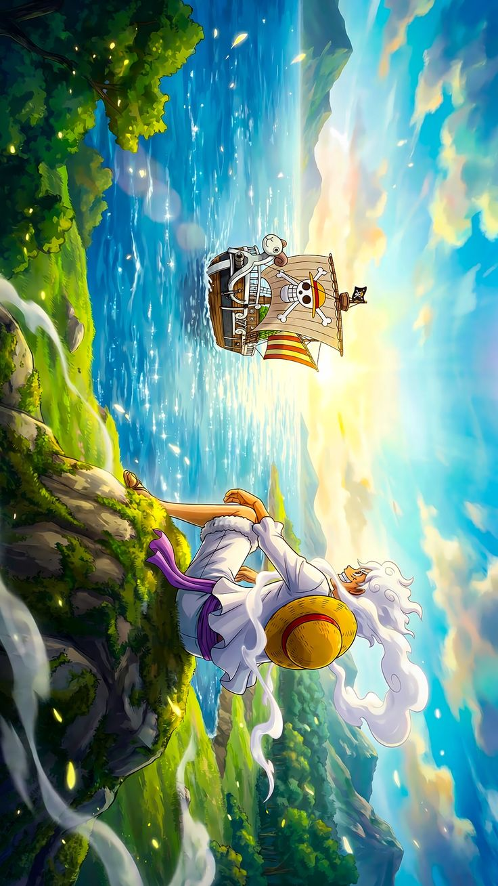

One Piece
Arcos de One Piece
One Piece se organiza en sagas y arcos que muestran como Luffy pasa de ser un pirata novato del East Blue a una figura capaz de sacudir el equilibrio del mundo. Cada isla introduce aliados, enemigos, culturas, secretos historicos y pistas sobre el gran misterio que rodea al One Piece.
Volver a One PieceGuia general
Como se construye la aventura de Luffy
Los arcos de One Piece no solo sirven para encadenar combates. Cada uno presenta un problema local que termina conectado con algo mucho mas grande: el Gobierno Mundial, los Yonkos, los poneglyphs, el Siglo Vacio o la lucha por la libertad.
Por eso la serie mezcla humor, drama, exploracion, politica y accion. Un arco puede empezar como una aventura ligera y terminar revelando un trauma del pasado, una guerra o una pieza clave del mapa hacia Laugh Tale.
- Las primeras sagas se centran en formar la tripulacion y entrar en la Grand Line.
- La etapa media eleva la escala con Robin, Enies Lobby, Thriller Bark y la guerra de Marineford.
- Tras el timeskip, el foco pasa a alianzas, emperadores del mar, Road Poneglyphs y el destino del mundo.
Sagas y arcos principales
Saga East Blue
Los origenes del Sombrero de Paja
La aventura arranca con un tono clasico de piratas y va reuniendo a la tripulacion base. Aqui se forma el corazon emocional del grupo y se ve por primera vez que Luffy no solo busca fama, sino libertad para vivir a su manera.
- Romance Dawn. Presenta a Monkey D. Luffy, su sueno de convertirse en Rey de los Piratas y el inicio de su viaje. Tambien deja claro su codigo moral y su forma impulsiva, pero noble, de enfrentarse al mundo.
- Orange Town. Luffy conoce a Nami y choca con Buggy, un pirata tan ridiculo como peligroso. El arco mezcla humor con la primera gran prueba de confianza dentro del grupo.
- Villa Syrup. La banda recluta a Usopp mientras desenmascara el plan del capitan Kuro. Sirve para introducir el valor del ingenio, la mentira convertida en valentia y el deseo de tener un barco propio.
- Baratie. En el restaurante flotante aparece Sanji y entra en escena Dracule Mihawk, el mejor espadachin del mundo. El arco profundiza en el hambre, la lealtad y el sueno de encontrar el All Blue.
- Arlong Park. Se revela el pasado de Nami y la opresion de Arlong sobre su isla. Es uno de los primeros picos emocionales de la serie y el momento en que la tripulacion demuestra que ya es una familia.
- Loguetown. Ultima parada antes de la Grand Line y ciudad vinculada a Gold Roger. Smoker entra en escena, la tension crece y se siente que el mundo se hace mucho mas grande.
Saga Arabasta
La entrada real a la Grand Line
Aqui One Piece deja de ser solo una historia de aventuras insulares y se convierte en una trama de conspiraciones, reinos enteros y organizaciones criminales con alcance mundial. Vivi y Baroque Works empujan la serie hacia conflictos politicos mas complejos.
- Reverse Mountain. Marca la entrada oficial a la Grand Line y muestra que navegar este mar es un desafio en si mismo. La travesia gana un tono mas imprevisible y legendario.
- Whiskey Peak. Los protagonistas descubren que la supuesta bienvenida de la isla era una trampa de cazadores de piratas. Empieza la amenaza de Baroque Works y se presenta el viaje de Vivi.
- Little Garden. La tripulacion llega a una isla prehistorica donde dos gigantes guerreros mantienen un duelo eterno. El arco refuerza la idea de que cada isla de la Grand Line tiene reglas propias y mitologia unica.
- Drum Island. Luffy y los suyos conocen a Tony Tony Chopper en una isla nevada marcada por la tirania de Wapol. El arco mezcla medicina, dolor y esperanza, y suma a uno de los miembros mas queridos del equipo.
- Arabasta. Crocodile manipula una guerra civil para apoderarse del reino mientras Baroque Works mueve los hilos. Es la primera gran guerra de la serie y consolida a Luffy como alguien capaz de derrotar a un enemigo que amenaza a todo un pais.
Saga Skypiea
Suenos imposibles y aventuras legendarias
Skypiea representa la faceta mas aventurera y fantastica de One Piece. Tambien siembra elementos que con el tiempo ganan enorme importancia, como ciertos paralelismos historicos, la herencia de las civilizaciones perdidas y la voluntad de perseguir lo imposible.
- Jaya. Introduce el valor de creer en los suenos cuando todos se burlan de ellos. Tambien presenta a Marshall D. Teach, cuya ideologia refleja una cara mas oscura del mismo espiritu pirata.
- Skypiea. La tripulacion alcanza la isla del cielo y se enfrenta a Enel, un gobernante con complejo de dios. El arco combina ruinas antiguas, aventura pura, humor, guerra y una mitologia que gana peso con el paso del tiempo.
Saga Water 7
La tripulacion se rompe para volver mas fuerte
Esta etapa convierte el viaje en algo mucho mas personal. Los conflictos ya no llegan solo desde fuera: tambien aparecen heridas internas, decisiones imposibles y la necesidad de declarar la guerra al propio sistema del mundo.
- Long Ring Long Land. Los juegos absurdos contra Foxy parecen ligeros, pero funcionan como pausa antes de una etapa mucho mas dura. El Davy Back Fight aporta humor y muestra otra tradicion pirata.
- Water 7. La crisis del Going Merry, la aparente traicion de Nico Robin y el choque entre Luffy y Usopp golpean de lleno a la tripulacion. Es uno de los arcos mas humanos de la serie.
- Enies Lobby. El rescate de Robin frente al Gobierno Mundial se convierte en una declaracion total de rebeldia. Aqui nacen algunos de los momentos mas iconicos de One Piece, tanto por accion como por carga emocional.
- Post-Enies Lobby. Tras la guerra llegan las consecuencias, nuevas recompensas y varias revelaciones familiares sobre Luffy. El mundo empieza a reaccionar a los Sombrero de Paja como una amenaza de verdad.
Saga Thriller Bark
Terror, sombras y sacrificio
Aunque arranca con tono de comedia gotica, Thriller Bark es clave por la llegada de Brook y por demostrar hasta donde puede llegar Zoro por su capitan. Tambien refuerza la amenaza de los Sichibukai.
- Thriller Bark. En una isla terrorifica controlada por Gecko Moria, la tripulacion combate zombis, experimentos y trampas. Brook se une al grupo y el final deja uno de los actos de lealtad mas recordados de toda la obra.
Saga Guerra de Marineford
El mundo demuestra su verdadera escala
Esta saga rompe el ritmo habitual del viaje y saca a Luffy de su zona segura. La historia pasa de la aventura insular a un conflicto global donde emperadores, almirantes, revolucionarios y carceleros chocan por el destino de Ace.
- Archipielago Sabaody. Los Mugiwara descubren el peso real de los Tenryuubito, la Marina y los almirantes. El arco deja claro que el mundo de One Piece es mucho mas cruel de lo que parecia hasta entonces.
- Amazon Lily. Separado de su tripulacion, Luffy llega a la isla de Boa Hancock. El arco mezcla comedia, nuevas alianzas y el impulso desesperado por salvar a su hermano.
- Impel Down. La infiltracion en la gran prision submarina para rescatar a Portgas D. Ace une a Luffy con antiguos enemigos y aliados ocasionales. La tension no deja de crecer de camino a la guerra.
- Marineford. Estalla una guerra gigantesca entre la Marina y los piratas de Edward Newgate. Es uno de los puntos mas devastadores e importantes de toda la historia por su impacto politico y emocional.
- Post-War. Luffy afronta el dolor de la perdida y toma la decision de entrenar durante dos anos. El arco funciona como cierre de una era y prepara el gran salto del timeskip.
Saga Isla Gyojin
El regreso tras el timeskip
Despues de dos anos de entrenamiento, la tripulacion vuelve mucho mas fuerte y coordinada. Esta etapa sirve para mostrar su crecimiento y para recuperar temas centrales de la serie como la discriminacion, la historia oculta y la promesa de cambiar el mundo.
- Return to Sabaody. Los Sombrero de Paja se reencuentran y demuestran lo mucho que han evolucionado. Es una celebracion del regreso de la tripulacion completa.
- Isla Gyojin. Bajo el mar aparece un conflicto marcado por el racismo, la venganza y la convivencia entre especies. El arco profundiza en el legado de Fisher Tiger y Otohime, y conecta con grandes profecias del futuro.
Saga Dressrosa
La alianza que desafia a los emperadores
La serie entra de lleno en la lucha contra los grandes poderes del Nuevo Mundo. Law gana enorme relevancia, Caesar abre la puerta a experimentos y armas, y Doflamingo representa una amenaza ligada tanto al crimen como a la politica mundial.
- Punk Hazard. La alianza con Trafalgar D. Water Law nace en una isla congelada y ardiente marcada por los experimentos de Caesar Clown. Es el inicio del plan para golpear a Kaido a traves de la caida de Doflamingo.
- Dressrosa. Doflamingo gobierna un reino manipulado con terror, mentiras y espectaculo. El arco mezcla torneo, revolucion, pasado tragico y una enorme batalla coral que cambia la posicion de Luffy en el mundo.
Saga Whole Cake Island
Poneglyphs, traiciones y rescate de Sanji
Esta saga amplifica el peso de los Road Poneglyphs y muestra que la carrera hacia Laugh Tale ya esta completamente abierta. Tambien pone a prueba a la tripulacion en el plano emocional, sobre todo por el conflicto familiar de Sanji.
- Zou. En la isla errante de los Mink aparecen revelaciones clave sobre los Road Poneglyphs, Raizo y la importancia de ciertos linajes. Es un arco corto, pero decisivo para el rumbo final de la historia.
- Whole Cake Island. Luffy entra en el territorio de Charlotte Linlin para rescatar a Sanji. El arco destaca por su mezcla de cuento oscuro, conflicto familiar, estrategia, persecucion y sacrificio.
- Levely (Reverie). La reunion politica mundial aparta el foco de la tripulacion para mostrar movimientos enormes entre reyes, revolucionarios y figuras del poder global. Sus revelaciones repercuten en toda la Saga Final.
Saga Wano
Samurais, emperadores y una guerra total
Wano recoge semillas plantadas muchos arcos antes y las convierte en una guerra gigantesca. Es una saga de aislamiento, legado, libertad y choque directo contra Kaido y Big Mom, dos de los nombres mas temidos del mar.
- Pais de Wano. Luffy y sus aliados participan en una guerra samurai contra Kaido, Orochi y los emperadores del mar. El arco eleva la escala al maximo, profundiza en Kozuki Oden y cambia para siempre el equilibrio de poder.
Saga Final
La verdad del mundo empieza a salir a la luz
La etapa final junta ciencia, historia perdida, politica global y el cierre de muchos misterios sembrados desde el inicio. Cada revelacion tiene peso mundial y acerca a Luffy al centro real del conflicto del siglo.
- Egghead. La isla futurista de Vegapunk mezcla tecnologia, persecucion y revelaciones enormes sobre el Siglo Vacio, las armas antiguas y el funcionamiento oculto del poder mundial.
- Elbaf. La tierra de los gigantes abre una nueva fase de aventuras y secretos ligados a la historia del mundo. Todo apunta a que sera un lugar clave para la recta final del viaje y la verdad sobre el pasado.